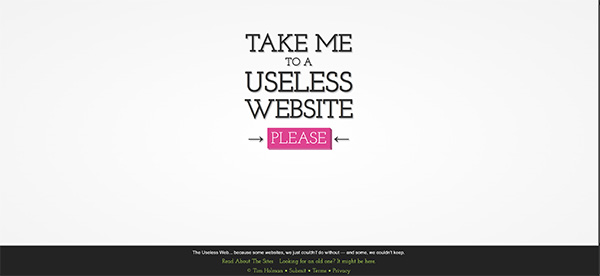

My first research task was to do a comparative analysis, which you can find here. I took some creative inspiration from The Useless Web. There is a simplicity to the design and I thought the idea of including 'please' as the text in the button is a fun way to ask for boredom.

There are many misconceptions about boredom. Danckert explores the truth about boredom. Boredom is not a state of apathy but a space for yearning. Danckert distinguishes boredom and depression. Boredom is dissatisfaction turned outward, and depression is dissatisfaction turned inward. Boredom breeds outward action, and depression breeds inward, meaningless comments. Boredom leads to exploration for something better. Overview of James Danckert's research.